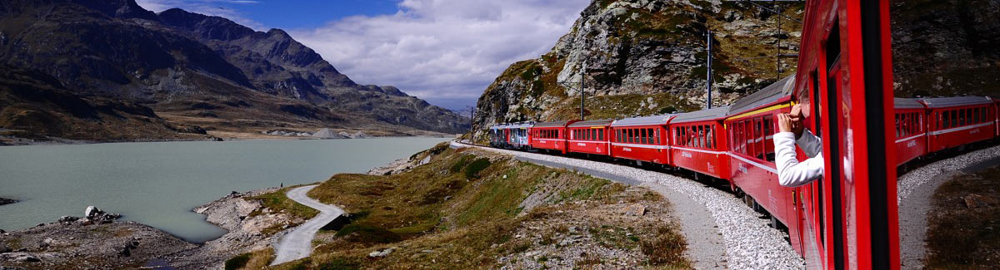

Informazioni Utili sul Trenino del Bernina
Come per qualsiasi altro viaggio, prima di partire è bene cercare informazioni utili sul Trenino del Bernina, così da godersi al meglio quest’esperienza unica immersi nelle vallate situate al confine tra Italia e Svizzera. Da più di cento anni il Bernina Express, treno ora di proprietà della Ferrovia Retica, percorre la tratta ferroviaria che mette in collegamento la città di Tirano con quella di Saint Moritz. Sia per la tecnologia utilizzata che per i paesaggi e le zone attraversate, un viaggio a bordo di questo treno merita di essere vissuto al meglio conoscendo cosa si sta vedendo.
Qualche consiglio sul Bernina Express può essere molto importante, in quanto il Trenino Rosso può essere l’attrazione particolare da effettuare durante un soggiorno in Valtellina o in Val Poschiavo o in Engadina, può essere scelto come mezzo di trasporto per un weekend di trekking in queste splendide valli o anche l’occasione per una gita in giornata. Quello che conta è che almeno una volta nella vita e perché no, anche più di una, magari in diverse stagioni perché il paesaggio tra estate e inverno rimanendo lo stesso cambia totalmente il proprio volto.
Diversi sono gli itinerari che si possono creare e seguire, così come sono pressoché infinite le attività che nella zona si possono praticare.
TRENINO DEL BERNINA – PREZZI
Una delle informazioni utili sul Trenino del Bernina riguarda sicuramente i prezzi che si potrebbe incontrare lungo il proprio viaggio. Infatti a Saint Moritz non circola l’euro ma il Franco Svizzero, in quanto situata in territorio elvetico, e anche il tenore di vita è molto diverso rispetto a quanto siamo abituati qui in Italia. Prima di decidere di acquistare qualcosa è bene sapersi regolare sul prezzo di ciò che si acquista, oltre che a riuscire a districarsi dietro ai calcoli per il cambio. Per fare un esempio, entrando in un bar il caffè costa mediamente 2,50/3,00 € mentre un bicchiere di acqua può essere pagato alla stregua di una birra o di una bibita gassata. Altri generi però, come i capi di vestiario, le calzature e i libri possono risultare più convenienti.
TRENINO DEL BERNINA – DOGANA
Un altro degli aspetti da tenere a mente in un viaggio sul Trenino del Bernina sono i documenti, infatti, dopo soli due chilometri dalla partenza da Tirano, si attraversa il confine tra Italia e Svizzera. Per poter passare la frontiera è necessario un documento di identità valido per l’espatrio (carta d’identità o passaporto). A partire dal 2008 non avviene più il controllo sistematico dei documenti alla stazione di Tirano, in quanto le Guardie di Confine svizzere salgono sul Bernina Express alla fermata di Campocologno e da lì, mentre il treno è in corsa, effettuano tutti i controlli di rito.
TRENINO DEL BERNINA – ABBIGLIAMENTO
Un altro consiglio utile per un viaggio sul Bernina Express riguarda l’abbigliamento da indossare durante i diversi viaggi e le diverse stagioni. Infatti questo magnifico treno percorre una tratta molto varia, con un dislivello di 1824 metri, che parte dai 400 metri sul livello del mare di Tirano e arriva oltre i 2200 dell’Ospizio Bernina, occorre pertanto vestirsi in maniera adeguata. Sebbene le carrozze del Bernina Express siano riscaldate anche in stagioni non propriamente fredde, il consiglio è quello di “vestirsi a cipolla” in modo da essere attrezzati sia per le temperature più miti di Tirano che per i 1800 metri di Saint Moritz.
TRENINO DEL BERNINA – PERCORRENZA
Se si parla del Bernina Express è bene sapere che rimane in funzione tutto l’anno, tutti i giorni, con circa 30 treni in circolazione al giorno sia regionali che espressi. Nemmeno l’inverno, con le sue abbondanti nevicate, riesce a fermarne le corse: tutti i problemi relativi all’ingombro delle rotaie sono risolti dagli appositi spartineve rotativi e dal personale addetto, che opera spesso di notte per non intralciare l’intenso, e necessario, traffico diurno. L’unica differenza tra inverno ed estate riguarda l’orario, infatti viene ridotto nel periodo invernale.
CLASSI
Come tutti i treni, anche sul Bernina Express vige la classica suddivisione tra prima e seconda classe. La particolarità è che oltre alle carrozze separate esistono anche carrozze di classe mista.
DISABILI
Questi ovviamente furono gli eventi di maggior richiamo, ma per tutto I viaggi con il Bernina Express, o semplicemente una gita di giornata, non prevedono controindicazioni per persone disabili. Le stazioni di Tirano e Saint Moritz sono attrezzate con appositi monta carrozzelle, così come ci sono alcuni treni in servizio, forniti di una carrozza tipo “BD” cioè carrozza con bagagliaio, porte di carico larghe, laterali, di porte interne più larghe nonché anche di spazio adatto per la carrozzina, anche in posizione aperta (quindi non ne occorre una necessariamente pieghevole).
 CANI
CANI
Il trasporto di eventuali cani (o animali domestici di piccola taglia) sul Bernina Express è regolamentato come su una normale ferrovia, con apposito biglietto da pagare per l’animale, che dev’essere però munito di tutti i relativi documenti e vaccinazioni previste per l’espatrio. Per cani di piccola taglia con apposita borsa è ammesso di norma il trasporto gratuito.
CAMBIO MONETA
Saint Moritz si trova in Val Engadina, nel Canton dei Grigioni. La Svizzera non fa parte dell’Unione Europea, pertanto la moneta corrente è il franco svizzero. Il cambio, che può variare a seconda delle oscillazioni giornaliere, si attesta a 1 euro = 1,20 – 1,30 CHF. Diversi esercizi accettano solo banconote di euro ma danno il resto in franchi svizzeri. Si consiglia di non pagare con banconote di taglio eccessivamente piccolo. Le carte di credito sono comunemente accettate.